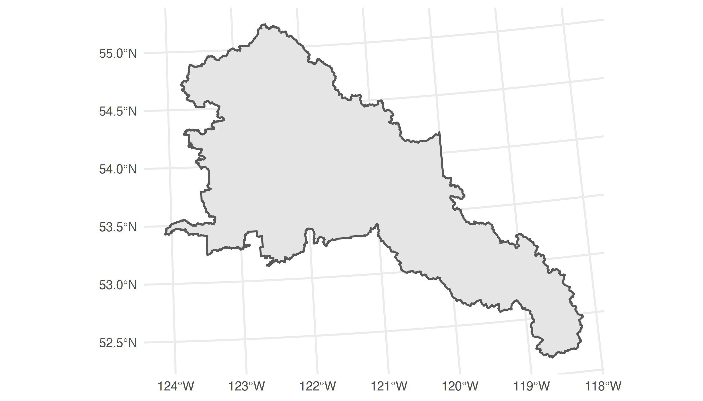
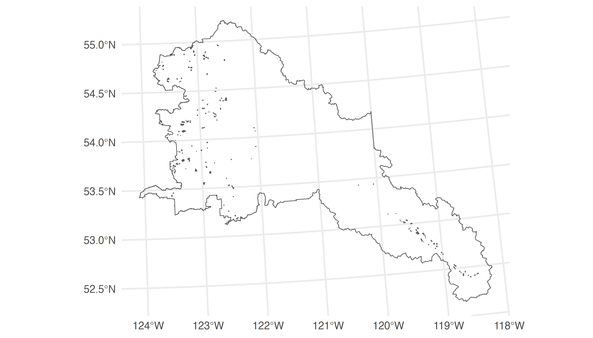
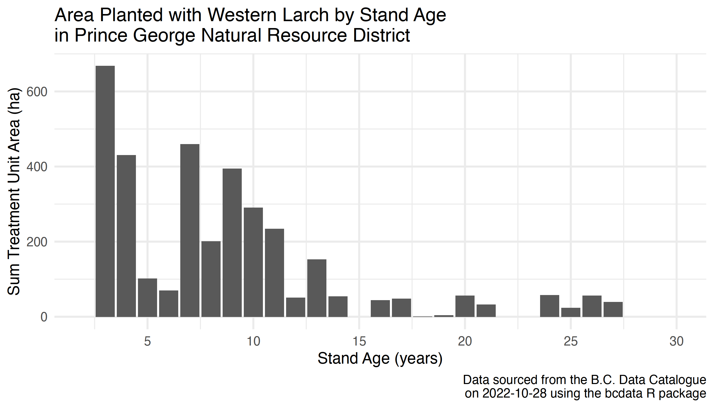
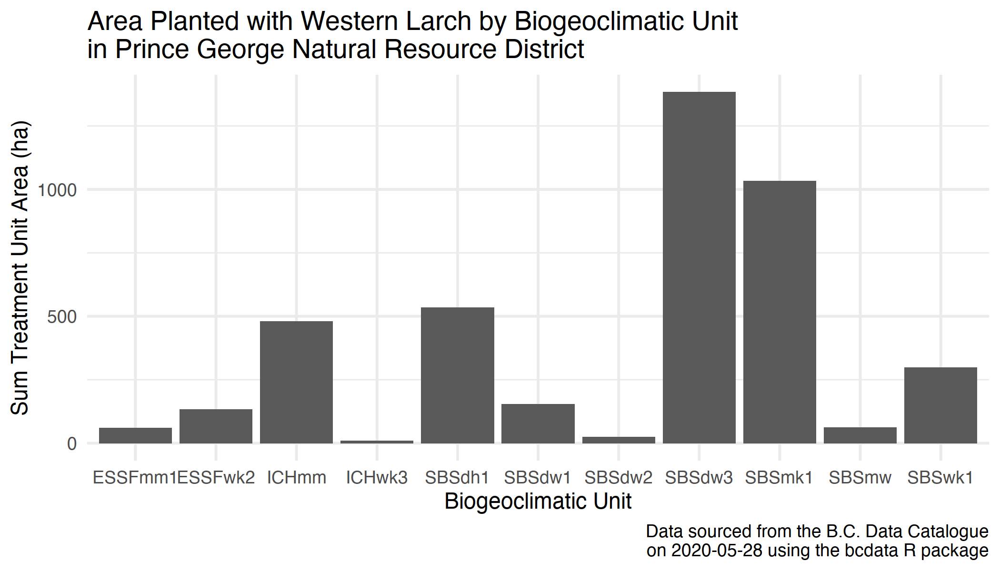

Exploring Silviculture Data with bcdata
2022-10-28
Source:vignettes/explore-silviculture-data-using-bcdata.Rmd
explore-silviculture-data-using-bcdata.RmdThis vignette will demonstrate how you can use bcdata to
access and explore British Columbia silviculture data.
Silviculture Data
Silviculture data for British Columbia are largely collected and stored through the Reporting Silviculture Updates and Land Status Tracking System (RESULTS) database—including information on the management of openings, disturbances, silviculture activities and obligation declarations as required by the Forest and Range Practices Act. RESULTS data sets are publically available through the B.C. Data Catalogue under the Open Government Licence - British Columbia.
Reforestation with Climate Considerations
Western larch has been identified as a tree species that will be well-adapted to projected future climates in northern British Columbia. In 2013, forest policy was developed that allowed foresters to plant western larch outside of its natural range as a climate change adaptation silviculture measure.
Getting Started
To start, let’s load the bcdata package. We will also
load the dplyr and ggplot2 packages to help us
work with the data. You can learn more about the dplyr
package here and the
ggplot2 package here:
Getting the Data
We can gather the data we need to answer our question using the RESULTS
- silviculture forest cover dataset. First, let’s take a look at the
metadata record using bcdc_get_record():
# Get the metadata using the human-readable record name
bcdc_get_record("results-forest-cover-silviculture")
#> B.C. Data Catalogue Record: RESULTS - Forest Cover Silviculture
#> Name: results-forest-cover-silviculture (ID: 258bb088-4113-47b1-b568-ce20bd64e3e3)
#> Permalink: https://catalogue.data.gov.bc.ca/dataset/258bb088-4113-47b1-b568-ce20bd64e3e3
#> Licence: Open Government Licence - British Columbia
#> Description: RESULTS opening's forest cover poylgons with silviculture component
#> provided. Current forest cover subimssion into RESULTS must contain attribute and map
#> information. However, there are historical forest cover polygon infomration where maps
#> are not available. Forest Cover is provided at three critical milestones of at
#> harvesting, at regeneration, and at free growing. This is a part o fthe Silviculture
#> and Land Status Tracking dataset, which includes tracking achievement of silviculture
#> obligations on Crown Land
#> Available Resources (1):
#> 1. WMS getCapabilities request (wms)
#> Access the full 'Resources' data frame using:
#> bcdc_tidy_resources('258bb088-4113-47b1-b568-ce20bd64e3e3')
#> Query and filter this data using:
#> bcdc_query_geodata('258bb088-4113-47b1-b568-ce20bd64e3e3')We see that this is a Web Feature
Service-enabled geospatial data set–the list of data resources
includes WMS getCapabilities request–so we can query and
retrieve this geospatial data set using
bcdc_query_geodata():
# Query the data using the permanent ID of the record to guard against name changes
bcdc_query_geodata("258bb088-4113-47b1-b568-ce20bd64e3e3")
#> Querying 'results-forest-cover-silviculture' record
#> • Using collect() on this object will return 920718 features and 159 fields
#> • Accessing this record requires pagination and will make 921 separate requests to the WFS.
#> • See ?bcdc_options
#> • At most six rows of the record are printed here
#> ────────────────────────────────────────────────────────────────────────────────────────────────────
#> Simple feature collection with 6 features and 159 fields
#> Geometry type: MULTIPOLYGON
#> Dimension: XY
#> Bounding box: xmin: 1184167 ymin: 526455.5 xmax: 1801754 ymax: 1083545
#> Projected CRS: NAD83 / BC Albers
#> # A tibble: 6 × 160
#> id FORES…¹ STOCK…² OPENI…³ STAND…⁴ SILV_…⁵ SILV_…⁶ SILV_…⁷ SILV_…⁸ STOCK…⁹ STOCK…˟ STOCK…˟
#> <chr> <int> <int> <int> <chr> <chr> <dbl> <dbl> <int> <chr> <chr> <chr>
#> 1 WHSE_FORE… 4177991 2243439 1724262 1 C 1.6 1.6 0 IMM ART <NA>
#> 2 WHSE_FORE… 3994007 NA 1248495 <NA> 91 1.2 1.2 0 MAT NAT <NA>
#> 3 WHSE_FORE… 3994067 NA 1120935 <NA> 86 0.6 0.6 0 MAT NAT <NA>
#> 4 WHSE_FORE… 3994009 1404558 1248495 A AA 22.1 22.1 0 IMM ART <NA>
#> 5 WHSE_FORE… 3994057 1211894 1120935 B 2B 16.9 16.9 0 IMM ART <NA>
#> 6 WHSE_FORE… 3994063 NA 1120935 <NA> 82 0.1 0.1 0 MAT NAT <NA>
#> # … with 148 more variables: SILV_RESERVE_CODE <chr>, SILV_RESERVE_OBJECTIVE_CODE <chr>,
#> # TREE_COVER_PATTERN_CODE <chr>, REENTRY_YEAR <chr>, REFERENCE_YEAR <int>, SITE_INDEX <int>,
#> # SITE_INDEX_SOURCE_CODE <chr>, BGC_ZONE_CODE <chr>, BGC_SUBZONE_CODE <chr>, BGC_VARIANT <chr>,
#> # BGC_PHASE <chr>, BEC_SITE_SERIES <chr>, BEC_SITE_TYPE <chr>, BEC_SERAL <chr>,
#> # IS_SILV_IMPLIED_IND <chr>, FOREST_COVER_SILV_TYPE <chr>, S_FOREST_COVER_LAYER_ID <int>,
#> # S_TOTAL_STEMS_PER_HA <chr>, S_TOTAL_WELL_SPACED_STEMS_HA <int>,
#> # S_WELL_SPACED_STEMS_PER_HA <int>, S_FREE_GROWING_STEMS_PER_HA <int>, …This query shows that this data set has many features and over 150 fields. Each feature is a treatment unit within a harvested opening, and contains information on the leading five tree species that are present in each treatment unit, including stems per hectare, age, and height.
Note that we have only queried the data set so far—the data
set would be too large (~1GB) to download efficiently. So, let’s use
filter() with bcdc_query_geodata() to refine
our query before we collect the data and import it into R.
Refining a Geospatial Data Query
To address our question, we need the treatment data (1) from the Prince George Natural Resource District and (2) that contain western larch.
First, we can use the bcdata package to download the
spatial boundary for the Prince George Natural Resource
District—DPG is the ORG_UNIT for Prince George
Natural Resource District:
## Create a spatial feature object named dpg
dpg <- bcdc_query_geodata("natural-resource-nr-district") %>%
filter(ORG_UNIT=="DPG") %>% # filter for Prince George Natural Resource District
collect() # and collect the dataLet’s plot this spatial object and double check we have we what we need:
dpg %>%
ggplot() +
geom_sf() +
theme_minimal()
Now we have a spatial object that we can use as a bounding box to filter and download records in the RESULTS - silviculture layer from the Prince George Natural Resource District.
We only need to download the treatments that have western larch
planted. We can use the bcdc_describe_feature() helper
function to examine the column names and types of the layer. In this
case, we want to keep rows where the five S_SPECIES_CODE_*
columns contain "LW", the code for western larch.
# Make a vector of tree species we are interested in
# (in this case only LW for western larch)
spp_list = c("LW")
# Query and filter the data layer
trees_dpg <-
bcdc_query_geodata("258bb088-4113-47b1-b568-ce20bd64e3e3") %>%
filter(INTERSECTS(dpg)) %>% #filter for records that are within the DPG boundary
filter(
S_SPECIES_CODE_1 %in% spp_list | #filter for LW records
S_SPECIES_CODE_2 %in% spp_list |
S_SPECIES_CODE_3 %in% spp_list |
S_SPECIES_CODE_4 %in% spp_list |
S_SPECIES_CODE_5 %in% spp_list
) %>%
collect() #collect/download the dataExploring the Data
Let’s look at the dimensions of this now much more manageable data object we have downloaded from the B.C. Data Catalogue:
dim(trees_dpg)
#> [1] 212 160We can see there are several treatment units planted with western larch, and we can make a quick map of these harvested openings for the Prince George Natural Resource District:
trees_dpg %>%
ggplot() +
geom_sf() +
geom_sf(data = dpg, fill = NA) + #add the DPG spatial boundary
theme_minimal()
We can also create some quick descriptive summaries of the data, treating the geospatial attribute table as a data frame in R, and answer our original question—how much western larch has been planted in the Prince George Natural Resource District?
What is the size and age distribution of larch plantations in the Prince George Natural Resource District in the year 2020?
trees_dpg %>%
mutate(age = 2020 - REFERENCE_YEAR + S_SPECIES_AGE_1) %>% #create a plantation age column
ggplot() + #start a plot
aes(x = age, y = FEATURE_AREA_SQM/10000) + #convert feature area to hectares
geom_bar(stat = "sum") +
scale_x_continuous(name = "Stand Age (years)",
limits = c(2, 30),
breaks = seq(from = 5, to = 30, by = 5)) +
labs(y = "Sum Treatment Unit Area (ha)",
title = "Area Planted with Western Larch by Stand Age\nin Prince George Natural Resource District",
caption = paste0("Data sourced from the B.C. Data Catalogue\n on ",
Sys.Date(),
" using the bcdata R package")) +
theme_minimal() +
theme(legend.position = "none")
What is the Biogeoclimatic Ecosystem Classification (BEC) distribution of western larch plantations in the Prince George Natural Resource District?
We can download British Columbia
biogeoclimatic (BEC) data from the B.C. Data Catalogue using
bcdata and join to our existing trees_dpg
geospatial dataset using the st_join function from the
sf package. You can learn more about sf here.
library(sf) #load the sf package
# Load the BEC data for Prince George Natural Resource District
# Load the BEC data for Prince George Natural Resource District
bgc_dpg <- bcdc_query_geodata("WHSE_FOREST_VEGETATION.BEC_BIOGEOCLIMATIC_POLY") %>%
filter(BBOX(dpg, crs = "EPSG:3005")) %>% #note filtering with a BoundingBox
collect()
# Join the BEC data with our tress_dpg geospatial data set
trees_bec_dpg <- trees_dpg %>%
st_join(bgc_dpg[, "MAP_LABEL"]) #join BEC data for each polygonNow, we can summarize the area planted with western larch by biogeoclimatic unit:
trees_bec_dpg %>%
group_by(MAP_LABEL) %>% # group polygons by biogeoclimatic unit
summarise(Area = sum(FEATURE_AREA_SQM)/10000) %>%
ggplot() +
aes(x = MAP_LABEL, y = Area) +
geom_col() +
labs(y = "Sum Treatment Unit Area (ha)",
x = "Biogeoclimatic Unit",
title = "Area Planted with Western Larch by Biogeoclimatic Unit\nin Prince George Natural Resource District",
caption = paste0("Data sourced from the B.C. Data Catalogue\n on ",
Sys.Date(),
" using the bcdata R package")) +
theme_minimal() +
theme(legend.position = "none")